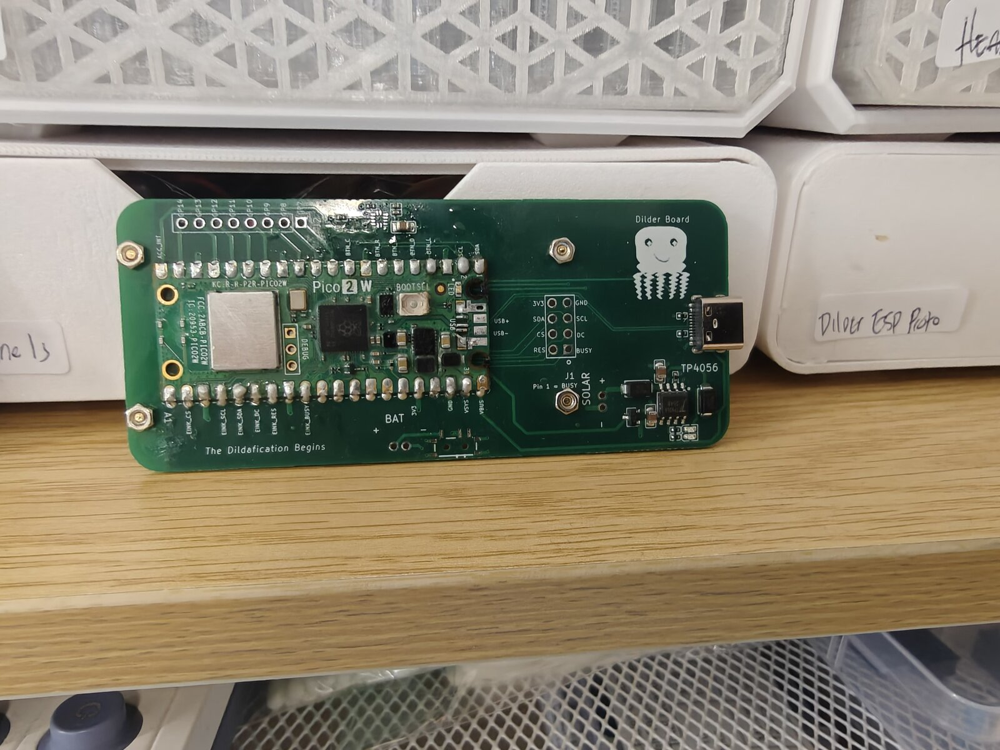
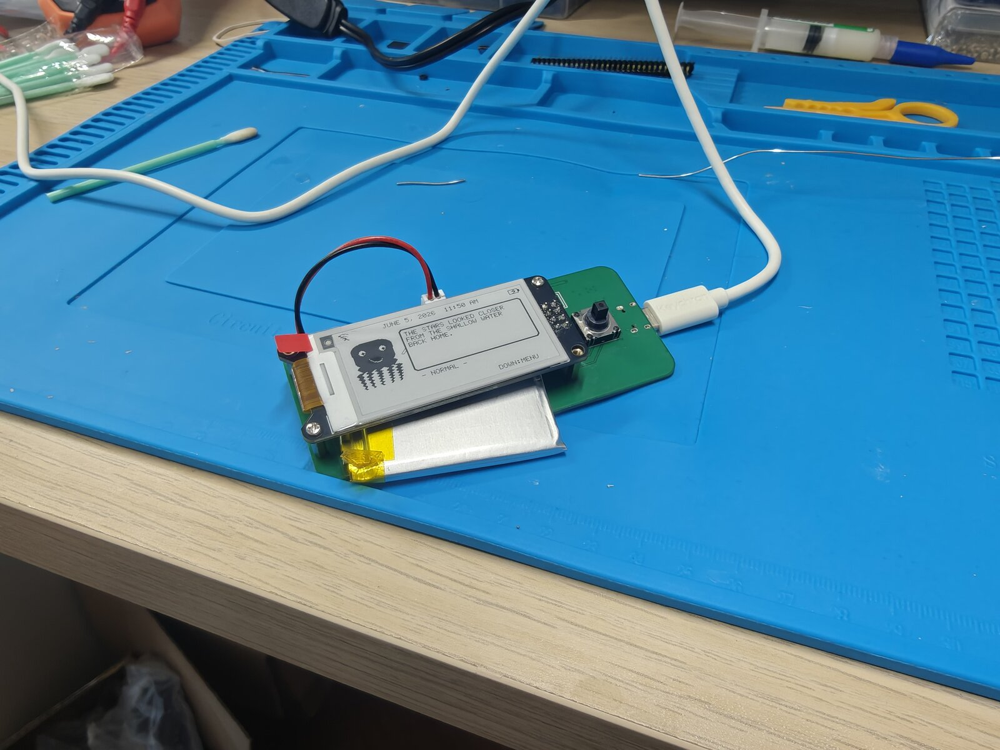
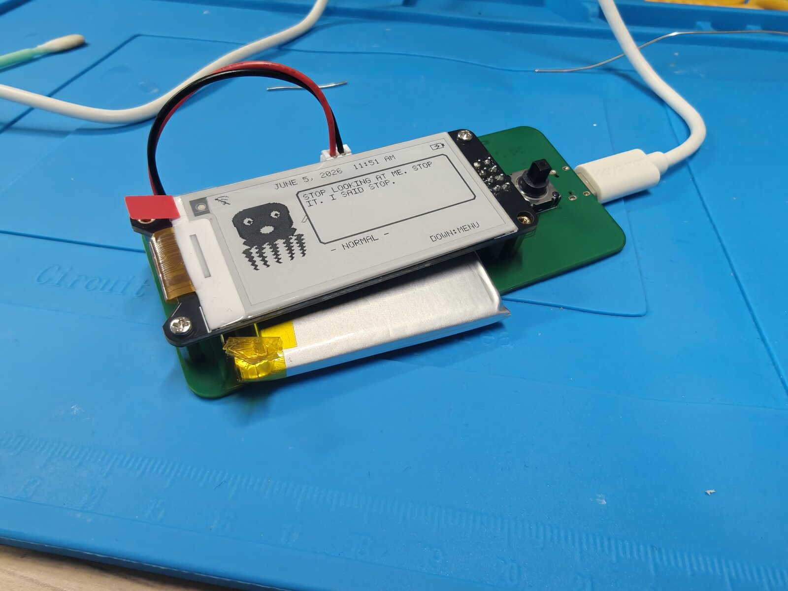
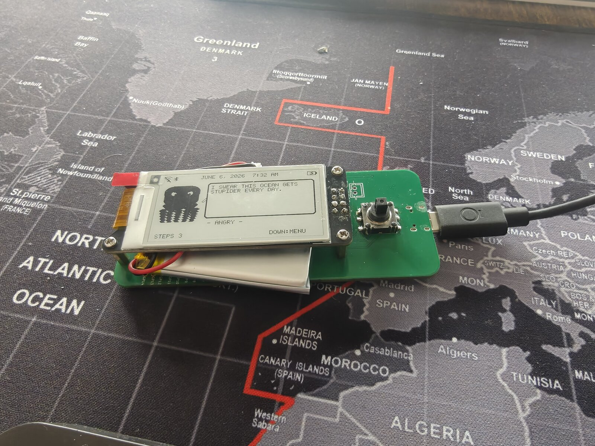
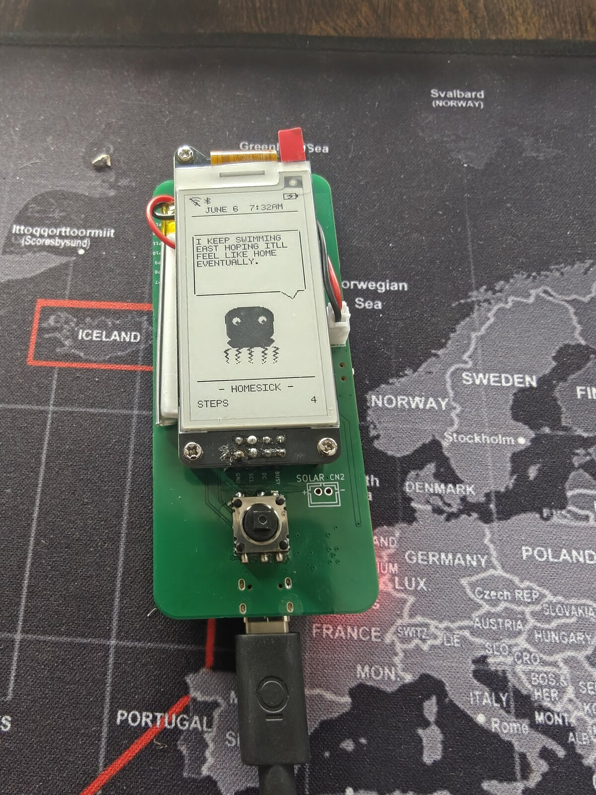

Firmware Comes Alive: Bluetooth Pairing, Auto-Rotate, and the Custom Dilder Board¶
The custom Dilder Board is off the bench and running the real firmware — and it has grown up a lot. The octopus now rotates with the device, counts your steps, remembers your WiFi, flashes itself over the air, and as of this week, pairs to your phone over Bluetooth LE. Here's the milestone, start to finish.

From bench to brain¶
First power-up on the custom board: e-ink wired over SPI, a LiPo on the JST, USB-C for power and charging. No enclosure, no ceremony — just the board, the display, and the octopus booting on real hardware.


What got built this milestone¶
A succinct run-down of the work, in the order it happened:
- WiFi OTA bootloader (picowota → RP2350). Ported the picowota bootloader to the Pico 2 W's RP2350 so the board can be reflashed over WiFi — hold the joystick UP at boot to drop into the OTA loader, then push a new image from the DevTool. No BOOTSEL, no cable.
- Accelerometer brought online. The on-board SC7A20 (I²C, addr
0x18) is read live — the basis for orientation and step counting. - Display auto-rotation. An
atan2tilt classifier picks one of three orientations and re-renders the whole UI — including a dedicated tall "longways" layout with a speech-bubble quote above the octopus. - Activity tracker. A low-power pedometer counts steps and active minutes from the accelerometer, shown right on the home screen.
- Saved WiFi networks. Credentials are cached to the last flash sector (survives reboot and OTA), so reconnecting needs no password re-entry. Save/forget from the menu.
- Faster boot. Removed the blocking boot-time WiFi connect and trimmed startup delays.
- Real Bluetooth LE pairing. A BTstack peripheral advertises as "Dilder Hub", pairs with a 6-digit passkey shown on the e-ink, and exposes a tiny GATT service so a phone can read live mood + step count and poke the device.
- Status icons. WiFi, Bluetooth (shown when paired), and battery now live in the top bar — in both orientations.
Auto-rotate + the activity tracker¶
Tilt the board and the UI follows. In the wide hold you get the octopus, a mood line, and the day's step count along the bottom; the top bar carries the WiFi / Bluetooth / battery icons.

Rotate to portrait and the firmware switches to the tall "longways" layout: a status bar up top, a speech-bubble quote with a little tail caret, and the octopus anchored at the bottom over the mood + step line.

Bluetooth, the secure way¶
Pairing isn't "Just Works" — it's Passkey Entry with MITM protection. Open Menu → Bluetooth, find Dilder Hub on your phone, and the e-ink shows a 6-digit code to type in. Once bonded, a small custom GATT service lets a phone:
- Read / subscribe to a live status string (
MOOD STEPS) — push-notified whenever it changes. - Write a command byte — currently nudging the octopus to a fresh quote, with room to grow into real remote control.
When bonded, the Bluetooth rune lights up in the top status bar next to WiFi — in either orientation.
Current capabilities¶
The Dilder firmware now does, on the custom board:
- Auto-rotating UI — three orientations, dedicated tall + wide layouts
- Step + activity tracking from the on-board accelerometer
- Saved WiFi with NTP clock sync; save/forget networks in-menu
- Bluetooth LE pairing — passkey-secured, phone-readable mood/steps
- WiFi OTA firmware updates (+ USB reflash with no BOOTSEL button)
- LiPo power + USB-C charging via on-board TP4056
- 16 moods, animated octopus, and a deep quote bank on a 2.13" e-ink
Next up: wiring specific phone-side command bytes to real actions, and folding all of this into the translucent Mk2 case.